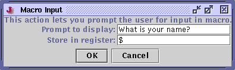

A macro is a prerecorded sequence of events that can be played back at any time. Macros can be used to automate complex operations and repeat a set of commands many times.
Macro files have the extension ".macro". See the section called Macro File Syntax for information about their syntax.
Macros can be stored in the macros subdirectory of the jEdit install directory or the .jedit/macros subdirectory of the user's home directory. The former contains several sample macros included with jEdit, and the latter should be used to store user-defined macros.
The Macros menu lists all known macros, in addition to commands for working with them. To play a macro, select it from the menu. The most recently recorded or played macro can be played back with the Macros>Play Last Macro command (keyboard equivalent: Control-M Control-L).
Creating subdirectories in the macros directory works as expected; they are displayed as submenus of the Macros menu. This can be used to organize a large collection of macros. The Macros menu is automatically refreshed when you update or create a macro file from within jEdit. Because macros are stored as ordinary files, they can be renamed, deleted and so on with your operating system's file manager. If you make changes to macros in a program other than jEdit, you can invoke Macros>Rescan Macros to update the macros menu with the changes.
Like most other menu item commands, macros can be assigned shortcuts in the Utilities>Global Options dialog box; see the section called The Global Options Dialog Box in Chapter 9.
Macros>Record Macro (keyboard equivalent: Control-M Control-R) prompts for a macro name, and begins recording to a file with that name suffixed with ".macro".
While a recording is in progress, "(recording)" is displayed in the status bar, instead of the caret position information. Currently, jEdit records key strokes, commands invoked from the menu bar, and tool bar clicks. Caret movement and selection performed using the mouse is not recorded; to move the caret or select text from a macro, use the text selection commands and arrow keys.
Search and replace operations can be recorded in macros. When search and replace operations are played back, the dialog boxes are not displayed, but the actual search and replacement is done.
Macros>Stop Recording (keyboard equivalent: Control-M Control-S) stops any recording currently in progress. It also switches to the buffer where the macro was being recorded, giving you a chance to check over the commands and make any necessary changes. When you are happy with the macro, simply save it and it will automatically appear in the Macros menu. If you wish to discard the macro, close it without saving.
Sometimes, a complicated action only needs to be repeated a few of times, and it is not worth creating a new macro file. The temporary macro feature is useful in those situations.
Macros>Record Temporary Macro (keyboard equivalent: Control-M Control-M) works in a similar fashion to the Record Macro command, except that it records to a buffer named __temporary__.macro.
Macros>Stop Recording (keyboard equivalent: Control-M Control-S) stops recording the temporary macro. This is the same command used to stop recording an ordinary macro. Once recording is complete, you don't need to save the __temporary__.macro buffer to play it back. However, if you do save it, it will become an ordinary macro, displayed in the Macros menu.
Macros>Play Temporary Macro (keyboard equivalent: Control-M Control-P) plays the macro recorded to the __temporary__.macro buffer.
While recording a macro, invoking Macros>Prompt for Input will display a dialog box allowing you to record a special command which when played back, will prompt the user for input and store it in a specified register.
Figure 4-8. The Prompt for Input dialog box

Macro files have very simple syntax, with one command per line. Lines starting with a hash ("#") are ignored by the macro interpreter and can be used to add commentary to macros, etc. Non-comment lines consist of an action name and optional argument. An at character ("@") separates the action name and argument.
Each jEdit command has a corresponding action name. Currently, the only way to find out a command's action name is to record it in a macro and look at the output.
In a command argument, strings of the form $x will be replaced with the contents of register x when the macro is executed. This is a very powerful feature; you could, for example, write a macro that prompts the user for some input, does something to it, and then performs a search, based on that input.
Here is a simple macro that swaps two characters on either side of the caret:
# Get rid of selection, if any select-none # Get character before caret and cut it to the clipboard # If the current line looks like: hello wol|rd, with caret at | # It will now look like: hello wo|rd select-prev-char cut # Now, position the caret after the second character # If the current line looks like: hello wo|rd # It will now look like: hello wor|d next-char # Finally, paste the character that was cut at the start # If the current line looks like: hello wor|d # It will now look like: hello worl|d paste # Done! |
Here is another trivial macro that surrounds the selected text with HTML <B> tags (if the $$ bit looks a bit strange, keep in mind that $x is expanded to the contents of the register named x, and that the $ register is an alias for the clipboard):
cut insert-char@<B>$$</B> |
This final example demonstrates prompting the user for input in a macro:
# Prompt the user for a URL and store it in register 'a' input@a@Enter a URL: # Prompt for link text and store it in register 'b' input@b@Enter link text: # Insert <A> tag insert-char@<A HREF="$a">$b</A> |